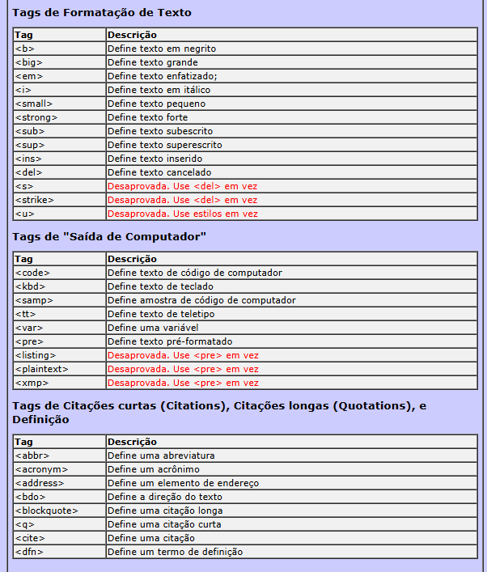

<strong>. Exemplo: Negrito 1
<b>. Exemplo Negrito 2
<em>. Exemplo: Itálico
< i >. Exemplo: Itálico
Para entender melhor a diferença acesse o código fonte desta página.
Resumidamente, as tags não semanticas estão muito mais relacionados à forma do texto, pouco importando a semântica (significado) da tag. Já as tags semânticas prezam muito mais pelo significado da tag, o que aquela tag está marcando.
Outras formatações:
